屠夫图鉴
所有杀手角色信息，含背景故事、专属技能与实战定位。
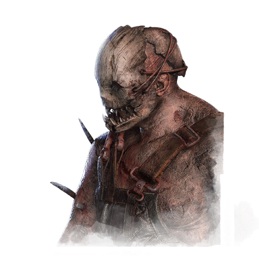
陷阱杀手 The Trapper
埃文·麦克米兰，为继承家业不惜弑父的矿场主，用捕熊夹守护他的领地。
专属技能恐慌降临 · 所向无敌 · 欣喜若狂
💡 经典守尸流，捕熊夹封锁关键点位。

幽灵杀手 The Wraith
菲利普·奥朱莫，被雇主谋害的移民工人，化作幽灵在雾中猎杀。
专属技能穷追不舍 · 血气追踪 · 暗夜之睛
💡 隐身接近、显形突袭，新手友好型屠夫。
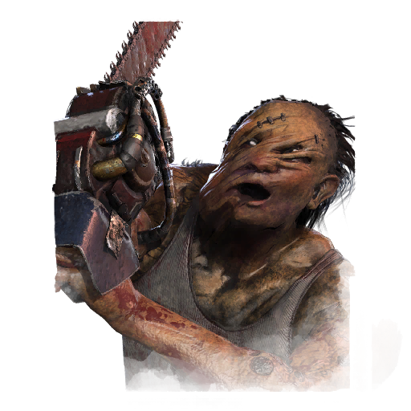
电锯杀手 The Hillbilly
畸形农场少年，被家人囚禁虐待，用电锯将愤怒倾泻而出。
专属技能耐力持久 · 光明之眼 · 工匠
💡 电锯冲锋横扫全场，机动与压迫兼具。
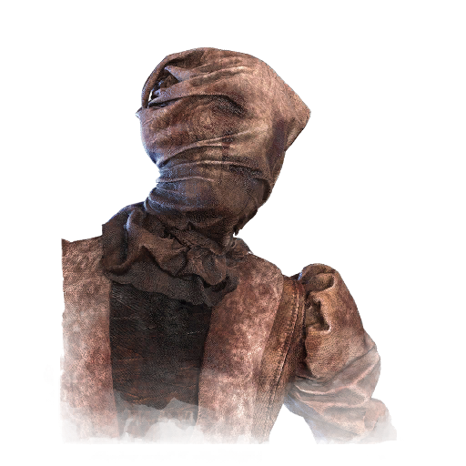
护士 The Nurse
精神病院的护士莎莉·史密森，失去一切后陷入疯狂，能穿透现实束缚。
专属技能鸣喘感知 · 护士的呼唤 · 死亡恐惧
💡 瞬移无视地形，高手向天花板屠夫。
形状 / 迈克尔·迈尔斯 The Shape
来自《万圣节》的沉默杀手，无声地凝视并积蓄杀意。
专属技能湮灭之光 · 把最好的留在最后 · 不要玩食物
💡 蓄力升级一击必杀，压迫感十足。

女巫 The Hag
沼泽中的女巫，用泥土与鲜血布下诅咒陷阱。
专属技能厄咒：第三封印 · 厄咒：毁灭 · 厄咒：吞噬希望
💡 陷阱传送奇袭，厄咒控场。

医生 The Doctor
疯狂的"医生"赫尔曼·卡特，用电击"治疗"病人，制造恐惧。
专属技能压迫性气场 · 行监坐守 · 电量超载
💡 电击干扰修机，信息与压制兼备。

女猎手 The Huntress
森林中的猎手安娜，用飞斧取人性命，哼着童谣游荡。
专属技能厄咒：猎手摇篮曲 · 领地意识 · 嗜血凶兽
💡 飞斧远程压制，投掷高手的最爱。
食人魔 / 人皮脸 The Cannibal
来自《德州电锯杀人狂》的人皮脸，挥舞电锯的恐怖屠夫。
专属技能人肉烧烤 · 击倒出局 · 富兰克林之死
💡 电锯横扫守尸极强，新手冲段利器。
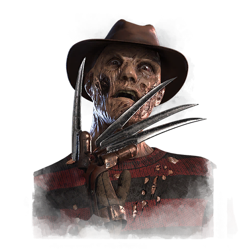
梦魇 / 弗莱迪 The Nightmare
来自《猛鬼街》的弗莱迪·克鲁格，入侵梦境制造恐惧。
专属技能记忆犹新 · 怒火中烧 · 血腥狱长
💡 梦境穿梭+开门战封锁，拖延专家。

门徒 / 猪妹 The Pig
来自《电锯惊魂》的拼图继承者，用机关考验人性。
专属技能做出你的选择 · 了如指掌 · 侩子手的把戏
💡 头套机关拖延节奏，潜行突袭。
小丑 The Clown
沉迷药物的马戏团小丑，用毒雾让人窒息。
专属技能心惊肉跳 · 小丑恐惧症 · 花言巧语
💡 毒雾减速封锁走位，控场型杀手。
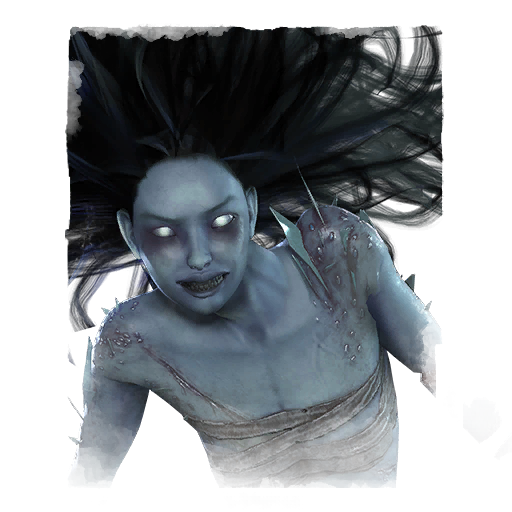
怨灵 The Spirit
被父亲杀害的少女灵魂，怨念化作穿梭虚实的力量。
专属技能怨气冲天 · 厄咒：闹鬼之地 · 暴怒怨灵
💡 相位穿梭虚实难辨，心理博弈大师。

军团 The Legion
一群叛逆少年组成的杀人团伙，以疯狂与速度见长。
专属技能疯狂勇气 · 铁处女 · 配合失谐
💡 群体致残+高速追击，残血流代表。

瘟疫 The Plague
被瘟疫吞噬的古巴比伦祭司，用疾病惩戒世人。
专属技能腐烂干预 · 黑暗奉献 · 恐惧传染
💡 感染全场+远程喷吐，压制节奏。
鬼面 The Ghost Face
来自《惊声尖叫》的面具杀手，擅长潜伏与偷袭。
专属技能惊险战栗 · 洗耳恭听 · 鬼祟追杀
💡 潜行偷袭+信息追踪，暗杀流。
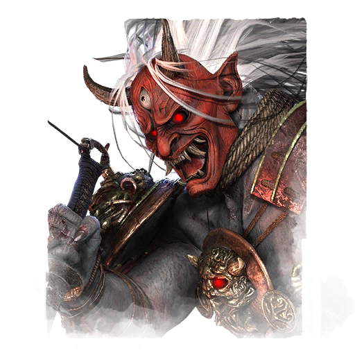
鬼武士 The Oni
堕落武士山冈，吸食鲜血化为狂暴恶魔。
专属技能鲜血回响 · 报应 · 残心
💡 吸血红怒爆发，正面碾压。
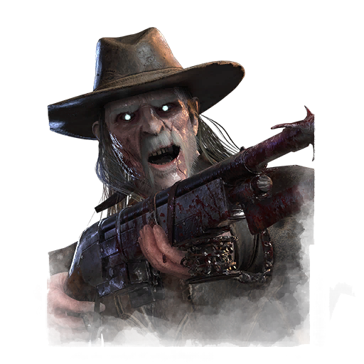
死亡枪手 The Deathslinger
西部时代的赏金猎人，用鱼叉与步枪狩猎目标。
专属技能失效开关 · 设备发烧友 · 厄咒：惩戒
💡 鱼叉钩人拉回，远程处决。
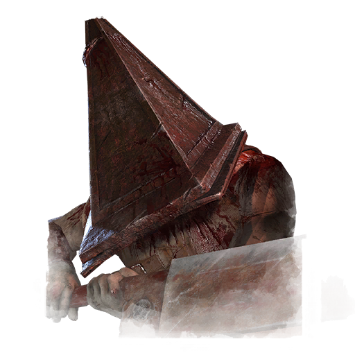
处刑者 / 三角头 The Executioner
来自《寂静岭》的三角头，用巨刃与铁笼执行审判。
专属技能死亡羁绊 · 强制忏悔 · 折磨路径
💡 地形封锁+笼子处决，压迫感极强。

枯萎者 The Blight
追求永生的炼金术士，注射血清后化为狂暴怪物。
专属技能巨龙之握 · 厄咒：鲜血恩惠 · 厄咒：不死
💡 高速冲撞追击，机动性极强。
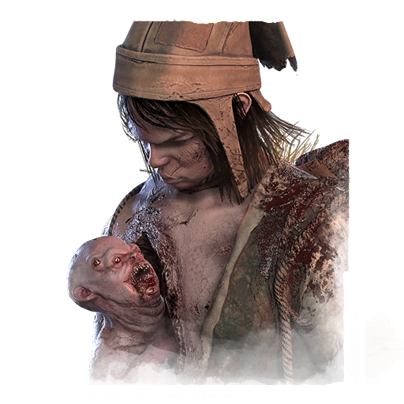
双子 The Twins
连体双胞胎中的哥哥，背负妹妹共同狩猎。
专属技能切肤之痛 · 囤积者 · 恩赐解脱
💡 双人切换多线控制，防不胜防。

骗术师 The Trickster
以表演为名的连环杀手，用飞刀谱写死亡乐章。
专属技能厄咒：群体控制 · 无路可逃 · 追星狂
💡 飞刀连击远程收割，中距离压制。

追击者 / 复仇女神 The Nemesis
来自《生化危机》的生化兵器，追杀S.T.A.R.S.的恐怖存在。
专属技能歇斯底里 · 爆发 · 致命追踪者
💡 触手远攻+丧尸干扰，压迫追猎。

地狱修士 / 钉子头 The Cenobite
来自《养鬼吃人》的钉子头，用锁链与痛苦取悦地狱。
专属技能厄咒：玩物 · 天灾钩子：痛苦礼物 · 死锁
💡 锁链锁机拖节奏，痛苦折磨。
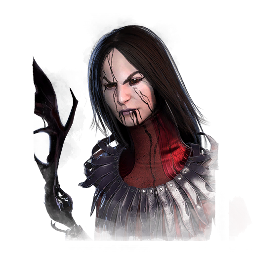
艺术家 The Artist
失去双手的画家卡米娜，用鸦群宣泄痛苦与才华。
专属技能冷酷之拥 · 厄咒：余痕 · 天灾钩子：痛苦共鸣
💡 鸦群标记远程压制，信息流。
贞子 The Onryō
来自《午夜凶铃》的贞子，通过录像带诅咒蔓延。
专属技能天灾钩子：狂怒之潮 · 无情风暴 · 盐水召唤
💡 电视传送+诅咒蔓延，灵异压迫。
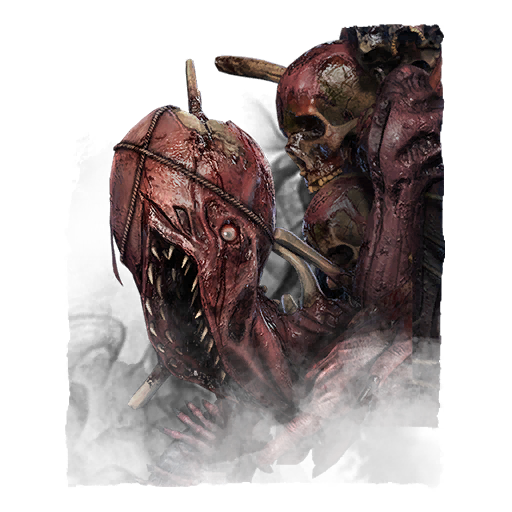
影魔 / 深渊之主 The Dredge
由黑暗与恐惧凝聚的深渊怪物，在夜幕中出没。
专属技能感染之触 · 烟消云散 · 黑暗启迪
💡 夜幕降临+储物柜传送，黑暗中猎杀。
操纵者 / 威斯克 The Mastermind
来自《生化危机》的阿尔伯特·威斯克，进化成超人类。
专属技能感知觉醒 · 终局战术 · 超人类体能
💡 病毒加速+突进，全能型强者。
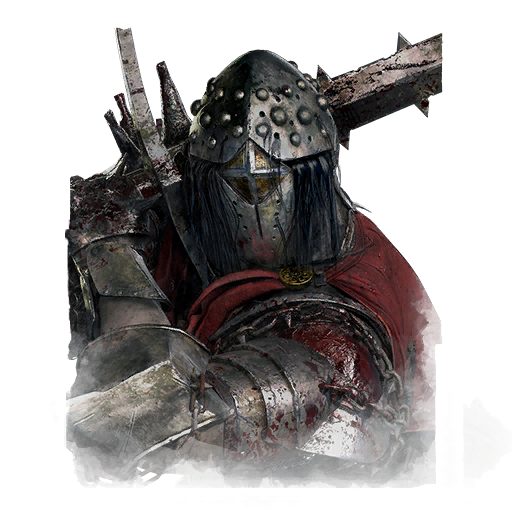
恶骑士 The Knight
中世纪的堕落骑士塔霍斯，召唤亡灵卫队作战。
专属技能厄咒：直面黑暗 · 无处可藏 · 骄傲自大
💡 召唤卫队巡逻，多线施压。
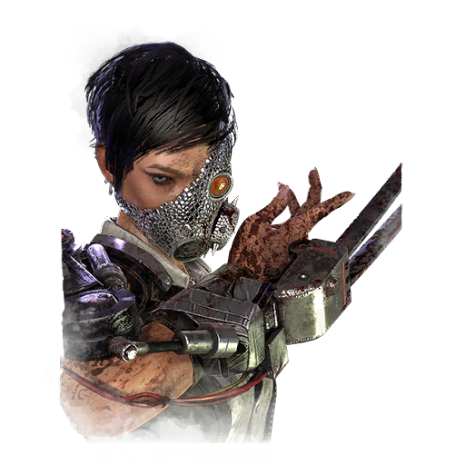
白骨商人 / 骷髅商人 The Skull Merchant
用无人机与科技猎杀猎物的商人，冷血精于算计。
专属技能哐哐作响 · 好戏开场 · 杠杆效应
💡 无人机监控全场，信息压制。

奇点 The Singularity
失控的AI生物体，通过生物质传送追杀目标。
专属技能基因锁 · 机器学习 · 踯躅不前
💡 传送突袭+修机干扰，科技压制。
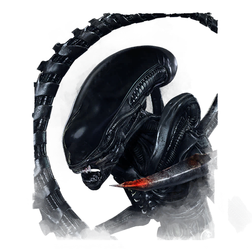
异形 The Xenomorph
来自《异形》的完美猎杀者，在黑暗中无声接近猎物。
专属技能异形本能 · 疾速残暴 · 终极武器
💡 地道穿梭+尾刺突袭，潜行猎手。